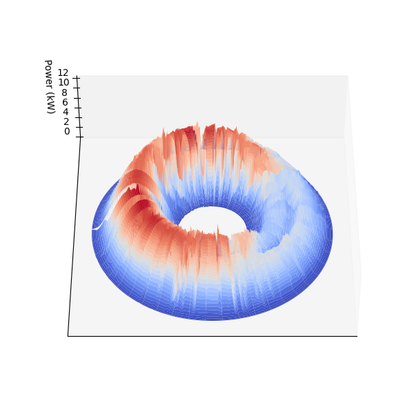
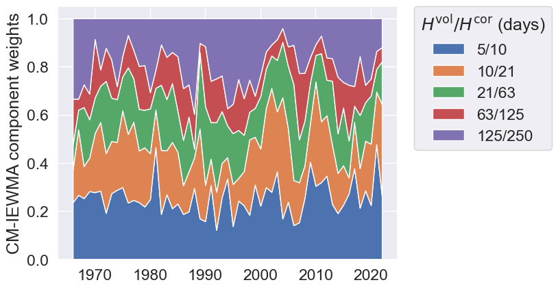
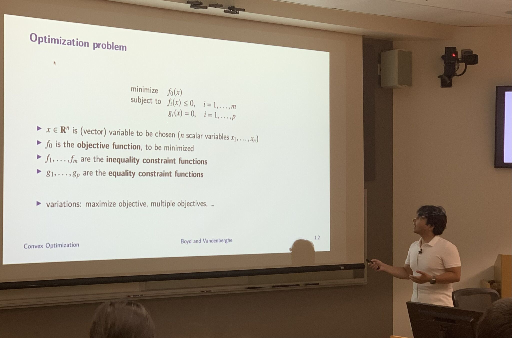

PhD Candidate, Electrical Engineering, Stanford University
About
I am a PhD candidate in electrical engineering at Stanford University, and member of convex optimization group advised by Prof. Stephen Boyd. My research is supported by U.S. Department of Energy as part of Renewable Energy Generator Risk under Outlier Weather (REGROW) project. I collaborate with SLAC National Accelerator Laboratory GISMO group and work closely with Dr. Bennet Meyers. I completed my bachelors in electrical engineering at Boğaziçi University in Istanbul. I am originally from Ankara, Turkey.
My expected graduation date is June 2025.
Research
My research is on developing convex optimization methods to integrate renewable energy resources such as solar energy into the power grid. Current paradigm of power grid operation is not fully designed to handle the variability and uncertainty of renewable energy resources (e.g. rotating outages in California on August 2020). I am interested in developing explainable machine learning models to do probabilistic forecasting of renewable energy resources and then design robust optimization methods to integrate these forecasts into the power grid operation. I try to make sure that methods I develop are explainable and interpretable so that they can be safely used in practice. To achieve this goal, I use tools from convex optimization, machine learning, and statistics.
Papers
Below are my recent papers. You can find the full list of my publications on Google Scholar. I also did some technical illustrations for the papers I co-authored and they were chosen as journal covers.
-
Time Dilated Bundt Cake Analysis of PV Output
We present a novel method for modeling time-dependent statistics in the power signal generated by a photovoltaic (PV) system. Our white-box machine learning method is interpretable and auditable, based on principles of multiperiodic basis functions and convex optimization. Our proposed method of time dilating the daily signal to remove night time values results in a novel representation of PV power signals, evocative of a `Bundt cake'. The proposed model describes the marginal distribution of power output as a function of date and time. The resulting probabilistic model of a PV system can be used to perform a variety of tasks, and here, we demonstrate the application of clear sky detection.
-
Interpretable Net Load Forecasting Using Smooth Multiperiodic Features
We consider the problem of forecasting net load over a horizon such as one day, using a trailing window of past net load values as well as date and time. We focus on three variations on this problem: point forecasts, marginal quantile forecasts, and generating conditional samples of the future value. We propose a method that relies on linear regression using some custom engineered time-based features to capture multiple periodicities, such as daily, weekly, and seasonal, and their interactions. Our proposed models are readily interpretable, and rely on efficient and reliable convex optimization to fit. We illustrate our method on four years worth of hourly net load data, comparing predictions made with various subsets of the features.
-
PV Fleet Modeling via Smooth Periodic Gaussian Copula
We present a novel method for fitting a smooth periodic stochastic process to PV power generation data using Gaussian copulas and convex optimization. Our method handles many aspects of the data such as seasonal variation in the distribution of power output, dependencies among different PV systems, and dependencies across time. It consists of statistically interpretable steps and is scalable to thousands of systems. Our method can generate synthetic data, detect anomalies, impute missing data and make forecasts. It is well suited for heterogenous data sets, e.g., combining power generation with weather data or even real-time energy prices.
-
A Simple Method for Predicting Covariance Matrices of Financial Returns
We consider the well-studied problem of predicting the time-varying covariance matrix of a vector of financial returns. Popular methods range from simple predictors like rolling window or exponentially weighted moving average (EWMA) to more sophisticated predictors such as generalized autoregressive conditional heteroscedastic (GARCH) type methods. Building on a specific covariance estimator suggested by Engle in 2002, we propose a relatively simple extension that requires little or no tuning or fitting, is interpretable, and produces results at least as good as MGARCH, a popular extension of GARCH that handles multiple assets. To evaluate predictors we introduce a novel approach, evaluating the regret of the log-likelihood over a time period such as a quarter. This metric allows us to see not only how well a covariance predictor does over all, but also how quickly it reacts to changes in market conditions. Our simple predictor outperforms MGARCH in terms of regret. We also test covariance predictors on downstream applications such as portfolio optimization methods that depend on the covariance matrix. For these applications our simple covariance predictor and MGARCH perform similarly.
Teaching

I was the instructor of EE364A:Convex Optimization I class in summer 2024. I taught the class to 43 students, designed the homeworks and final exam. I was responsible for reorganizing teaching material, coordinating with TAs, and grading. I was also the teaching assistant of the same class in summer 2022 and winter 2023. If you are studying the material in the book or in additional exercises please do not hesitate to reach out to me so that we can think together. You can find coding tutorials on CVXPY.
My previous teaching experience at Stanford include:
- CS224W:Machine Learning with Graphs (Fall 2021)
- CS236G:Generative Adversarial Networks (Winter 2021)
Awards, Conferences & Honors
- EU PVPMC 2024 (Poster presenter)
- DOE Cybersecurity and Technology Innovation Conference (Panelist)
- PVPMC 2024 (Best poster award)
- PVSC 2024 (Oral presenter)
- Stanford Government Energy Summit 2024 (Poster presenter)
- Citadel Securities PhD Summit 2024 (Quant challenge winner)
- Citadel Global PhD Datathon 2023 (Finalist)
- PVSC 2023 (Best paper finalist )
- Stanford School of Engineering Oswald Garrison Villard, Jr. Fellowship (Fellowship)
- Bogazici University Best Senior Design Project Award in Engineering (Capstone project)
- Canary CREST Program (Poster presenter)
- Turkish Education Foundation High Achievement Scholarship (Scholarship)
- Turkish Presidential Scholarship (known as "İlk 100 Bursu")
- 1st place in Turkish National University Entrance Examinations (Score: 559.10/560.00 Rank: 1st out of 2 million 145 thousand)
- Kangourou International Mathematics Competition (6th out of 13011)
Contact
You can contact me at giray98@stanford.edu if you have any questions.